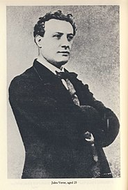

Биография
Детство
Жюль Верн родился 8 февраля 1828 года в городе Нант. Его отец, Пьер Верн, был адвокатом, а мать, Софи де ла Фюи, занималась домом. Мальчик был первенцем в семье, позже у него появился брат Поль и три сестры.
В возрасте шести лет Жюля отправили в пансион. Преподаватель часто рассказывала ученикам о том, как ее муж погиб при кораблекрушении, но она предпочитала верить в его спасение. Женщина представляла, как он выживал на необитаемом острове. Верна так впечатлили эти истории, что эта тема была в дальнейшем отражена в некоторых его работах.
Детство Жюля было самым обычным. Мальчик проявлял интерес к приключенческой литературе и романам, ему хотелось стать известным путешественником. Пьер был очень религиозным, он настоял на том, чтобы сын пошел в семинарию.
Молодость
Жюль Верн в возрасте 25 лет (около 1853 год)
Достигнув совершеннолетия, Жюль Верн решает оставить семью, которая на тот момент начинала сильно нервировать его своим давлением по поводу будущей профессии, и перебраться в Париж для дальнейшего изучения юриспруденции.
Узнав об этом, отец несколько раз пытается втайне помочь сыну поступить на юридический, но всякий раз, когда Жюль Верн узнает об этом, он намеренно проваливает экзамены и переходит в другой университет. В конечном счете в Париже остается лишь один факультет юриспруденции, о котором на тот момент мечтал Жюль.
Несколько лет после этого проходят для Жюля хуже, чем он планировал. Он старается держаться как можно дальше от юриспруденции, однако, имея знания только в этой области, тратит все последние деньги и вынужден в течение полугода жить на улице. В это же время Жюль Верн, стараясь вспомнить уроки матери об искусстве, начинает сочинять своё первое произведение
Его друг, с которым они познакомились на факультете, видя бедственное положение товарища, решает помочь и устраивает ему встречу с руководителем Исторического
театра в Париже.Тот, изучив произведение, начинает понимать, что талант Жюля Верна должна увидеть широкая общественность, поэтому через пару месяцев на сцене появляется постановка «Сломанные соломинки». После этого о начинающем писателе узнают и ему помогают финансово.
Достижение успеха и наиболее известные
произведения
Благодаря сотрудничеству с Историческим театром, Жюль Верн нашел себя как писатель, и с этого момента проникся идеей создания совершенно новых приключенческих произведений, в которых он мог бы описывать то, чего никогда прежде не касались другие авторы. Именно поэтому он создает свой первый цикл произведений, которые объединяет под общим названием «Необыкновенные путешествия».

В 1863 году в «Журнале для образования и отдыха» печатается первое произведение из цикла – «Пять недель на воздушном шаре». Оно получает самые положительные оценки читателей, ведь романтическая линия отношений главных героев, которая так привлекает в книге, была дополнена Верном еще и множеством научно-фантастических нововведений, что для того времени было новинкой. Поняв, что читателям нравятся подобные книги, Жюль Верн продолжает писать в этом стиле, в результате чего цикл пополняется такими произведениями, как «Путешествие к центру Земли» (1864), «Дети капитана Гранта» (1867), «Вокруг света за 80 дней» (1872), «Таинственный остров» (1874).
После выхода «Необыкновенных путешествий» имя Жюля Верна знал каждый житель страны, а позднее – всего мира. В его произведениях каждый мог найти что-то для себя. Для некоторых – это чудесные и невероятно романтичные сюжетные линии, связывающие героев, для других – присутствие хорошо и детально описанных приключений, для третьих – свежесть научных идей и взглядов. Многие литературные критики справедливо считают, что Жюль Верн был не просто основоположником фантастической литературы, но человеком, который верил, что люди перестанут воевать и начнут приобретать знания в области техники, забудут о войнах между народами. Во всех его произведениях можно проследить эту мысль.
Личная жизнь
Жюль Верн с супругой Онориной около 1900 года
Первой и единственной женой знаменитого на весь мир писателя была Онорина де Ви
ан – обычная
девушка из не очень богатой семьи. Жюль Верн встретился с ней во фран
цузском городке Амьен,
куда приехал по приглашению двоюродного брата на его свадь
бу. Между молодыми людьми
завязались прочные отношения, а уже через полгода
Верн попросил руки Онорины.
В браке у пары родился сын Мишель. К слову, при родах Жюль Верн не присутствовал,
так как на
тот момент путешествовал по Скандинавским странам, изучая их быт
для написания нескольких новых
произведений. Однако это не мешало писателю искрен
не и всей душой любить семью, оставшуюся
ждать его в Париже.
Позже, когда сын Верна Мишель повзрослел, он серьезно увлекся кинематографией. И
именно благодаря
ему мы сегодня можем не только читать, но и видеть некоторые
самые успешные работы Жюля Верна,
такие, как «Двадцать тысяч лье под водой»,
«Пятьсот миллионов бегумы» и многие другие.
Писатель-путешественник
Жюль Верн не был писателем, который сочиняет, не выходя из дома. Он много путешествовал, познав на себе все тяготы и романтику морей, гор, степей, снегов и пустынь. Со временем он старый парусный бот, который перестроил в яхту назвав её «Сен-Мишель», оборудовал там себе кабинет. Потом будут «Сен-Мишель II» и «Сен-Мишель III». Писателю не удалось побывать в России, хотя действие девяти его романов происходит на наших просторах, и в качестве главных героев русские выступают в двух его романах. В 1881 году он планировал на своей яхте дойти до Санкт-Петербурга, но многодневный сильный шторм помешал ему.
Жюль Верн не нанимал литературных компаньонов, которые бы писали под его именем. Он был очень работоспособным и плодотворным. Во всех путешествиях делал многочисленные заметки, вёл дневники. Дома садился за письменный стол в пять утра и работал до восьми вечера, создавая в день примерно по двадцать четыре книжные страницы.
Книги Жюля Верна занимают второе место в мире после Агаты Кристи по количеству переводов. Ещё при жизни читатели наградили его титулами «великий мечтатель», «пророк», «чародей», «гениальный выдумщик». Наследие писателя обширно: шестьдесят шесть романов, более тридцати повестей и рассказов, более двадцати пьес, научные и документальные работы, большое количество неопубликованных рукописей, которые продолжают выходить в свет до сих пор. В 1994 году был опубликован роман «Париж в XX веке», написанный в 1863 году. Его обнаружил правнук писателя Жан Верн, известный оперный тенор, разбирая семейные архивы в старом шкафу.
Последние годы жизни
9 марта 1886 года в Жюля Верна дважды выстрелил из револьвера психически больной 26-летний племянник Гастон Верн (сын Поля). Первая пуля не попала, а вторая ранила лодыжку писателя, отчего тот начал хромать. О путешествиях пришлось забыть навсегда. Инцидент удалось замять, но Гастон остаток жизни провёл в психиатрической лечебнице. Спустя неделю после инцидента пришла новость о смерти Этцеля.
15 февраля 1887 года скончалась мать писателя Софи, на похороны которой Жюль Верн не смог попасть по состоянию здоровья. Писатель окончательно утратил привязанность к местам детства. В том же году он проездом побывал в родном городе, чтобы вступить в права наследования и продать загородный дом родителей.
В 1888 году Верн занялся политикой и избрался в городское управление Амьена, где внедрил несколько преобразований и проработал 15 лет. Должность предполагала курирование деятельности цирков, выставок, представлений. При этом, он не разделял идей республиканцев, которые выдвинули его, а оставался убеждённым монархистом-орлеанистом. Его стараниями в городе был построен большой цирк, носящий в настоящее время имя Жюля Верна. В 1892 году писатель стал кавалером ордена Почётного легиона.
27 августа 1897 года от сердечного приступа умер брат и соратник Поль Верн, что повергло писателя в глубокую печаль. Жюль Верн отказался делать операцию на правом глазе, отмеченном катарактой, и впоследствии почти ослеп.
Похоронная процессия Жюля Верна, возглавляемая его сыном и внуком. 1905 год
В 1902 году Верн ощутил творческой упадок, ответив на просьбу Амьенской академии, что
в его возрасте «слова уходят, а идеи не приходят». Писатель с 1892 года постепенно дорабатывает
заготовленные сюжеты, не сочиняя новые. Отозвавшись на просьбу изучающих эсперанто, Жюль Верн
начинает новый в 1903 году роман на этом искусственном языке, но заканчивает лишь 6 глав.
Произведение после дополнений Мишеля Верна (сына писателя) вышло из печати в 1919 году под
заглавием «Необыкновенные приключения экспедиции Барсака».
Писатель скончался 24 марта 1905 года в своём амьенском доме по адресу: 44 Boulevard
Longueville (сегодня — бульвар Жюля Верна), на 78-м году жизни от
сахарного диабета. На похороны пришли более пяти тысяч человек. Немецкий император Вильгельм II выразил соболезнования семье писателя через посла, присутствовавшего на церемонии. Ни один делегат французского правительства не приехал.
Жюль Верн был похоронен на кладбище Мадлен в Амьене. На могиле установлен памятник, названный «К бессмертию и вечной юности». Скульптор Альбер Роз изготовил его с посмертной маски писателя.
После его смерти осталась картотека, включающая свыше 20 тысяч тетрадей со сведениями из всех областей человеческого знания. Из печати вышли семь прежде не издававшихся произведений и сборник рассказов. В 1907 году восьмой роман «Агентство Томпсон и К°», полностью написанный Мишелем Верном, вышел под именем Жюля Верна. О принадлежности романа перу Жюля Верна до сих пор ведутся споры.